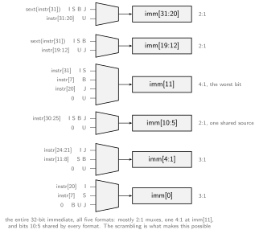

RISC-V is an open ISA with base integer instruction sets and modular extensions. These notes use RV32I/RV64I conventions unless specified; an implementation supports only its declared extensions and privilege modes.
Design decisions and their reasons:
| Decision | Why |
|---|---|
| load-store, 32 registers | simple pipelines, compiler-friendly (Simple Instruction Pipeline) |
| no condition codes | no integer condition-code register to rename or save |
| compare-and-branch in one instruction | no flags to save on context switch, fewer instructions |
| no delay slots | no architecturally required instruction after a branch |
| 32-bit base instructions, 16-bit with C | regular register fields; the encoding also reserves longer instructions |
| modular extensions | one ISA from microcontroller to server, no forced baggage |
RV32I/RV64I have 32 integer registers (x0-x31), XLEN
bits each, plus pc. E bases have 16 integer registers.
x0 is hardwired zero: reading gives 0, writes vanish. That
one trick synthesizes many instructions (mv,
nop, neg, compares against zero) from existing
ones.
| Reg | ABI name | Role | Saved by |
|---|---|---|---|
| x0 | zero | constant 0 | - |
| x1 | ra | return address | caller |
| x2 | sp | stack pointer | callee |
| x3, x4 | gp, tp | global / thread pointer | - |
| x5-x7, x28-x31 | t0-t6 | temporaries | caller |
| x8, x9 | s0/fp, s1 | saved / frame pointer | callee |
| x10-x17 | a0-a7 | arguments, a0-a1 returns | caller |
| x18-x27 | s2-s11 | saved | callee |
The base encodings use R/I/S/U formats plus B/J immediate variants. Register fields stay at fixed positions where present. Most signed immediates use instruction bit 31 as the sign bit; shift amounts and CSR immediate operands are exceptions.
| Format | Used by | Immediate |
|---|---|---|
| R | register-register ALU | none |
| I | ALU immediates, loads, jalr |
12-bit signed |
| S | stores | 12-bit signed, split around rs2/rs1 |
| B | branches | 13-bit signed byte offset, bit 0 fixed to 0 |
| U | lui, auipc |
upper 20 bits |
| J | jal |
21-bit signed byte offset, bit 0 fixed to 0 |
The B/J immediates look scrambled precisely to keep every other bit in its I/S position. Reconstructing the B-type immediate (the low zero is already included in its 13-bit byte offset): = bits followed by a hardwired 0 (branch targets are even), then sign-extend from bit 12.
Rotating B/J immediate bits reuses source positions and reduces immediate-generation muxing. Exact mux sizes depend on supported formats and synthesis:

ALU: add/sub/and/or/xor, shifts
sll/srl/sra, compares slt/sltu (set rd to
0/1); immediate forms addi/andi/.... RV64 adds
addw/subw/... operating on the low 32 bits with
sign-extension, keeping 32-bit C code fast.
Loads/stores: one addressing mode, base + 12-bit
signed offset. lw x5, 8(x2); sized variants
lb/lh/lw/ld (sign-extending) and lbu/lhu/lwu
(zero-extending), sb/sh/sw/sd.
Branches:
beq/bne/blt/bge/bltu/bgeu rs1, rs2, offset, comparing two
registers directly. PC-relative offsets from −4096 to +4094 bytes, in
steps of 2.
Jumps: jal rd, offset (call: rd gets
PC+4, typically ra), jalr rd, offset(rs1)
computes (rs1 + signed_offset) & ~1 and writes PC+4 to
rd (32-bit form).
Constants/addressing: lui forms an
upper immediate; auipc adds one to the current PC. A
following signed 12-bit operation supplies the low part, with carry
adjustment in the upper immediate. These pairs have finite reach, not
arbitrary address range. In RV64, constructing a sign-extended 32-bit
constant may require addiw; use li and
relocation-aware assembler forms.
Pseudo-instructions the assembler expands:
| Written | Actual |
|---|---|
li x5, 42 |
addi x5, x0, 42 (or
lui+addi) |
mv x5, x6 |
addi x5, x6, 0 |
not x5, x6 |
xori x5, x6, -1 |
j label |
jal x0, label |
call f |
auipc ra + jalr ra |
ret |
jalr x0, 0(ra) |
nop |
addi x0, x0, 0 |
Arguments in a0-a7, results in a0-a1,
return address in ra. Caller-saved (t, a
registers): the callee may clobber them, so the caller preserves what it
needs. Callee-saved (s registers, sp): the callee must
restore them before returning.
# RV64IM: int sumsq(int a, int b) { return helper(a*a) + b; }
sumsq:
addi sp, sp, -16 # prologue: grow stack (16 B aligned)
sd ra, 8(sp) # save return address (we make a call)
sd s0, 0(sp) # save a callee-saved reg
mv s0, a1 # b survives the call in s0
mulw a0, a0, a0 # a*a into argument register
call helper # clobbers t*, a*, ra
addw a0, a0, s0 # result += b
ld s0, 0(sp) # epilogue: restore
ld ra, 8(sp)
addi sp, sp, 16
retSelect a base ISA and supported extensions; RV32I and RV64I have different instruction sets:
| Ext | Adds | Notes |
|---|---|---|
| M | mul/mulh/div/rem |
multiply/divide |
| A | lr/sc, amoadd/amoswap/... |
atomics for the Memory Model |
| F, D | single/double FP, f0-f31 |
Floating Point Architecture |
| C | 16-bit compressed forms | ~25-30% code size cut; frequent ops, popular regs |
| V | vector registers, vsetvli, vector ops |
true vector model (Flynn's Taxonomy) |
| Zicsr | csrrw/csrrs/csrrc |
CSR access, prerequisite for Exceptions handling |
| B (Zba/Zbb/Zbs) | bit-manipulation | address gen, popcount, rotates |
G = IMAFD + Zicsr + Zifencei; a Linux-class core is typically RV64GC. Profiles (RVA23 etc.) bundle extensions so software has a stable target.
Privilege: M-mode is mandatory; U/S and virtualization support are optional. The 12-bit CSR address space has 4096 encodings, not 4096 implemented registers. Exceptions covers trap entry and return. Custom extensions need matching hardware and toolchain support.
| RISC-V | ARMv8 (AArch64) | x86-64 | |
|---|---|---|---|
| encoding | 32-bit (+16 C) | 32-bit fixed | 1-15 B variable |
| integer regs | 32 (I base; x0 fixed) | 31 + SP | 16 in the baseline ISA |
| flags | none | NZCV | EFLAGS |
| addressing modes | base+offset | base+offset, indexed, pre/post | base+index×scale+disp |
| memory model | RVWMO (weak) | weak | TSO (strong) |
| lineage | clean-slate 2010 | evolved 1985- | evolved 1978- |
x86-64’s variable length buys code density at the cost of the decode hardware in Advanced Superscalar Architectures; RISC-V bets that decode simplicity plus the C extension gets both.
Author: Sai Govardhan (saigov14@gmail.com)
License: MIT.